Rebalanceo de Bicicletas en estaciones de MiBici en 2023
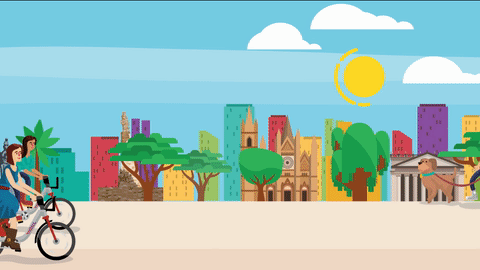
Ilustración de Luis Eduardo Luna, 2015
Sobre mí

Hola, soy Manuel Solano 🤟 (he/him)
Ingeniería en Ciencia de Datos y Matemáticas en Instituto Tecnológico y de Estudios Superiores de Monterrey 
Data Science Intern en URSA
Desarrollo de mejores ciudades con ciencia de datos
Transporte
Contexto
El servicio de MiBici, es un servicio de transporte público basado en una red de bicicletas compartidas en el Área Metropolitana de Guadalajara
¿Cuál es la problemática que intento resolver?
- Objetivo de los Sistemas de Bicicletas Compartidas
- Mejorar las conexiones dentro de las redes de transporte público.
- Ampliar la cobertura de transporte urbano.
- Claves para el éxito de los Sistemas de Bicicletas Compartidas
- Eficiencia de Rebalanceo
- Desafíos en el Rebalanceo de Bicicletas:
- Predicción de la Demanda
- Planificación de rutas
Enfoque del proyecto
La predicción de demanda de bicicletas
Asignación de bicicletas por estación
Metodología
Dramatización
Estación 49 C. Robles Gil / Av. Vallarta
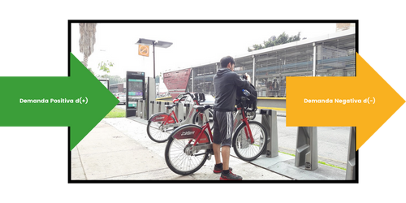
Demanda positva
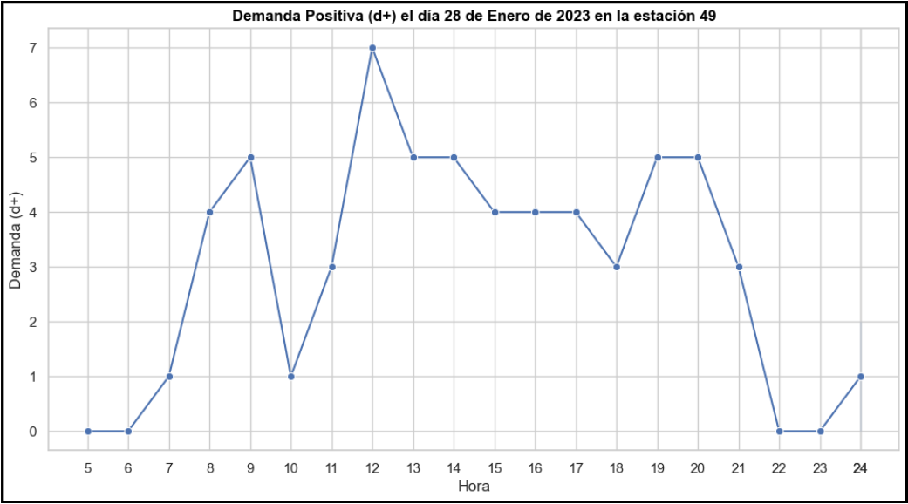
Demanda negativa
Propuesta de horarios de rebalanceo
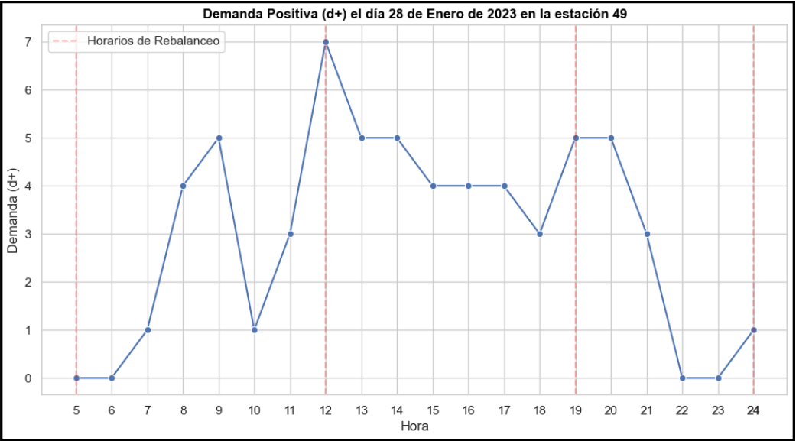
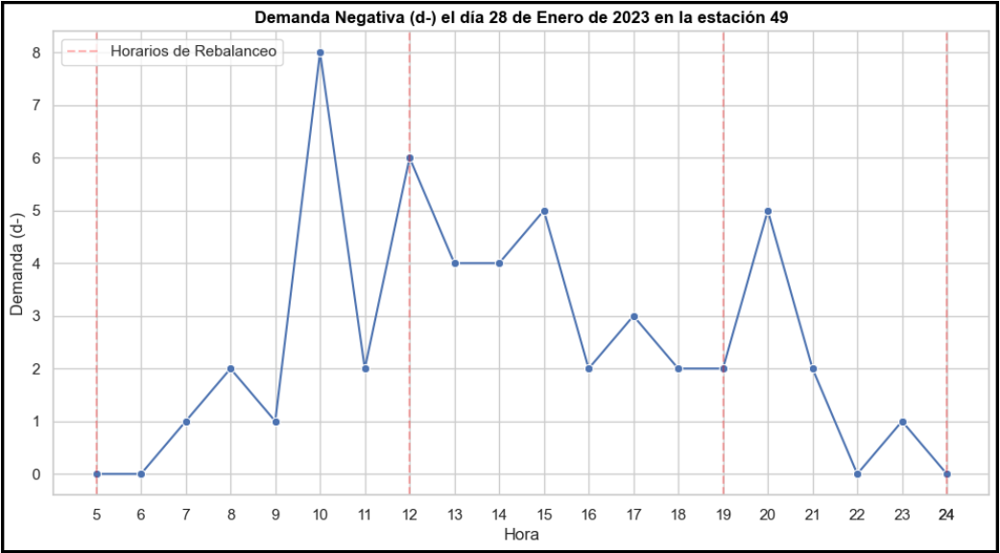
Centrémonos en el primer periodo
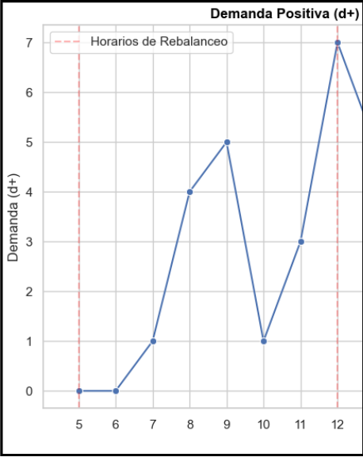
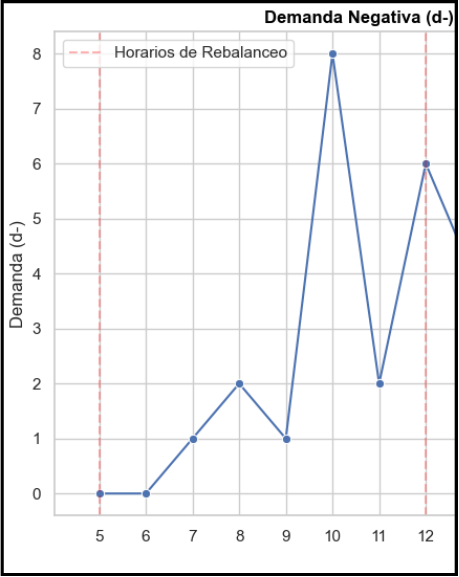
Algoritmo de rebalanceo
[0 , 0 , 1 , 4, 5, 1, 3, 7]
[0, 0, 1, 2, 1, 8, 2, 6]
Hacemos la diferencia de demanda positiva y demanda negativa para sacar la “demanda total”:
[0 , 0 , 1 , 4, 5, 1, 3, 7] - [0 , 0 , 1 , 2 , 1 , 8 , 2 , 6] = [0, 0, 0, 2, 4, -7, 1, 1]
[0, 0, 0, 2, 4, -7, 1, 1]
Se realiza para todos los periodos
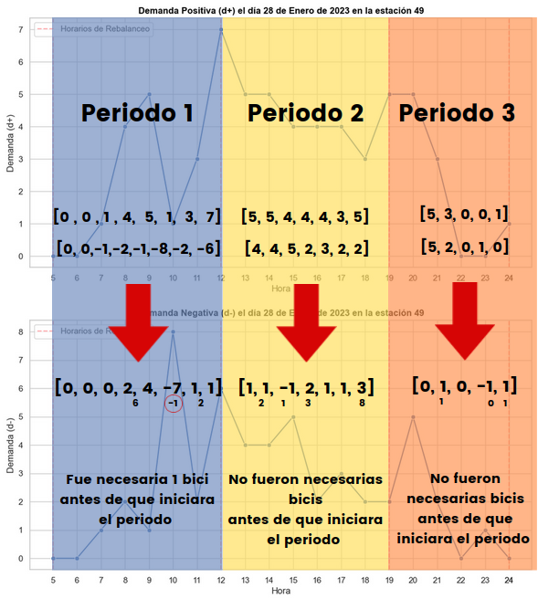
Predecir la demanda de bicicletas por estación
Random Forest (Árboles de regresión)
Nodos y Ramas
División del Conjunto de Datos
Criterio de División
Construcción Recursiva
Nodos Terminales (Hojas)
 Aprendizaje basado en árboles de decisión, Wikipedia
Aprendizaje basado en árboles de decisión, Wikipedia
Random Forest (Árboles de regresión)
Extracción de características:
- Mes
- Día
- Hora
Con información de 2020 a 2022 para predecir 2023

Comparación de Resultados
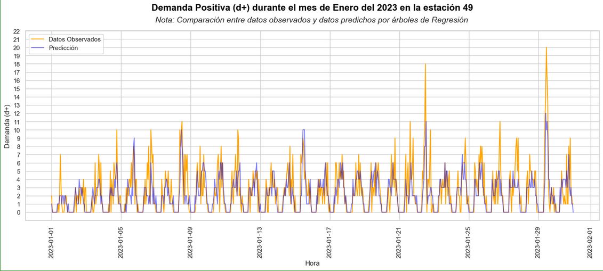
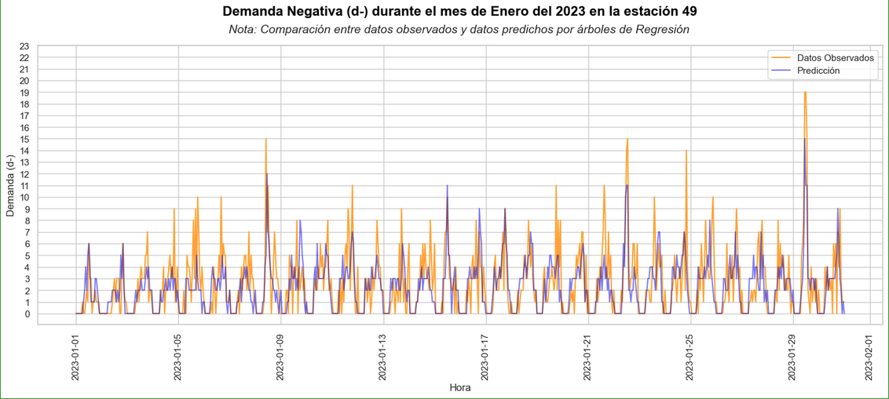
Pasos a Futuro
Modelos de machine learning para series de tiempo
Redes neuronales recurrentes
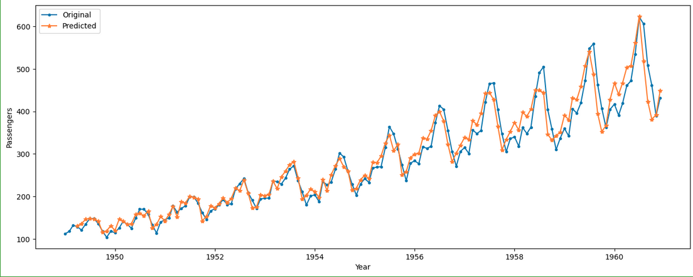
Predicciones de pasajeros en una aerolinea
Prototipo de software
Rebalancing Bike Sharing System App